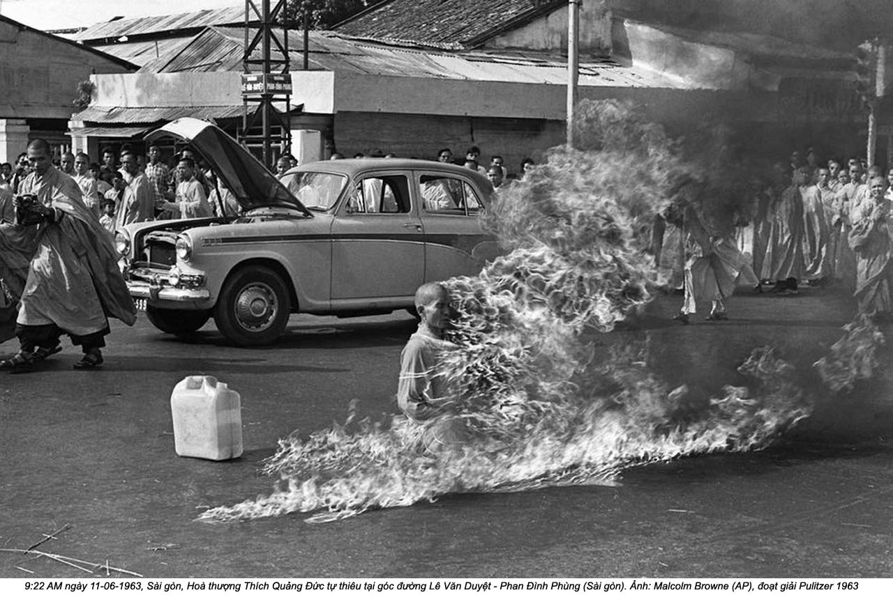

Chương 12

à Nhu hài lòng với thành công của tôi khi tìm lại cho bà những bức ảnh da cọp - quá hài lòng, bà nói, đến độ bà quyết định đã đến lúc gởi cho tôi bản tóm tắt trong một đoạn duy nhất về những hồi ức của bà.
Tóm tắt cuốn sách của tôi: Hội Thánh phải được bảo vệ. Khi đã nhận Sứ mệnh khắp thế giới để cho mọi người biết Sự thật về những gì đang xảy ra ở Việt Nam, tôi bắt đầu những chuyến đi vào tháng Chín, 1963, ở Liên minh Nghị viện ở Belgrade. Trong khi tôi vắng mặt, Việt Nam bị đóng đinh như “Chúa cứu thế của Các Quốc gia”... Mọi chuyện quay trở lại với Hội Thánh, như Bí mật Fatima, để cứu thế giới khỏi bị hủy diệt... Bà Ngô Đình Nhu.
Cái gì đây? Bí mật Fatima? Chúa cứu thế của Các Quốc gia? Thay cho một bản tóm tắt ngắn gọn về cuộc đời một người đàn bà từng đầy quyền lực, đoạn văn trên nghe như một trích đoạn từ một lời công kích của tôn giáo. Khi tôi hỏi bà Nhu những hồi ức cá nhân của bà ở đâu - mùi vị, âm thanh - bà trả lời quanh co.
“Đến đây”, bà hứa hẹn. “Tôi chỉ cần biết rằng tôi có thể dựa vào cô”.
Tôi có thể sẽ biết nhiều hơn.
Thử thách kế tiếp của tôi - thử thách sau cùng, bà Nhu hứa - là tìm văn bản một bài diễn văn vào tháng Tám năm 2009 của một người Mỹ, một giám mục Công giáo tên là William Skylstad, trong chuyến đi thăm Việt Nam từ Spokane, Washington. Có người kể với bà Nhu về chuyến viếng thăm của vị giám mục đến một vùng gần sát với thành phố Huế, một địa điểm gần gũi với trái tim bà. Vị giám mục dừng chân ở Đền thờ Đức Mẹ La Vang. Đối với bà Nhu, tính biểu tượng của chuyến thăm La Vang của vị giám mục Mỹ - hơn thế nữa, một giám mục vốn là chủ tịch Hội nghị các Giám mục Công giáo - có thể chỉ nói lên một điều: lời tạ lỗi về những gì đã gây ra cho gia đình bà. Tôi không bao giờ nghe nói về vị giám mục và địa điểm đó, nhưng tôi hứa với bà Nhu tôi sẽ tìm hiểu.
Các tín đồ nói rằng vào năm 1789, hình ảnh Mẹ Maria hiện ra ở một nơi bây giờ là huyện Hải Lăng, tỉnh Quảng Trị, miền Trung Việt Nam. Các tín hữu Công giáo ở quốc gia này từng chịu bách hại khủng khiếp; tôn giáo của họ đánh dấu họ như những kẻ có cảm tình với thực dân, trong khi các ông vua Việt Nam vẫn đang cố gắng chống lại sự xâm lăng của người Pháp. Nhà Nguyễn ban hành chỉ dụ phá hủy các nhà thờ, các ông vua Minh Mạng và Tự Đức khuyến khích đàn áp đạo Công giáo bằng mọi cách, thậm chí bằng bạo lực. Tổ tiên Công giáo của ông Nhu gần như bị xóa sạch. Hơn một trăm thành viên của dòng họ Ngô bị dồn ép lại trong một ngôi nhà thờ và thiêu cho đến chết vào đầu những năm 1800.
Đức Mẹ Maria nghe nói đã hiện ra khi một nhóm tín đồ Công giáo đang chạy trốn một đám người tàn sát trong các khu rừng. Bà mặc chiếc áo dài Việt Nam và bổng một đứa bé. Trong hào quang vây quanh, bà bảo mọi người hãy thường xuyên cầu nguyện và trấn an họ rằng những lời cầu khấn của họ sẽ được chấp nhận. Câu chuyện được kể đi kể lại cả trăm năm nay. Lúc bấy giờ, ảnh hưởng của thực dân Pháp ở Việt Nam đã cho phép các tín đồ Công giáo công khai thờ phượng, và địa điểm đó trở thành nơi hành hương cho hàng trăm ngàn người Công giáo Việt Nam. Vào ngày 22 tháng Tám năm 1928, các linh mục của Giáo hội Công giáo dâng thánh lễ trước 200.000 người hành hương. Bà Nhu chỉ là một cô bé, sống với gia đình Phật giáo của bà tận dưới vùng đồng bằng. Nhưng bà khám phá ra La Vang năm 1943 như một người cải đạo khi bà chuyển đến Huế theo gia đình chồng. Có thể bà bị thu hút vào địa điểm này vì thánh lễ diễn ra đúng vào sinh nhật của bà. Có thể bà thích hình tượng Đức Mẹ Maria. Hoặc có thể bà chỉ muốn thoát khỏi những người bà con bên chồng và lấy cớ để rời khỏi thành phố. Năm 1959, chính quyền Ngô Đình Diệm tuyên bố địa điểm này là thánh địa quốc gia. Nhà thờ La Vang sau đó vào năm 1961 được nâng cấp thành Tiểu Vương cung Thánh đường, cho thấy Vatican ghi nhận tinh thần chống Cộng kịp thời của nó.
Cuối cùng, nói về bài diễn văn, tôi vẫn trắng tay. Văn phòng giám mục hết lòng giúp đỡ. Bản thân giám mục yêu cầu thư ký gởi cho tôi những ghi chép của ông về chuyến đi đó. Tôi có thể nói với bà Nhu những gì ông lão bảy mươi lăm tuổi mặc áo chùng đen và khăn thắt lưng đỏ mặc cho trời nóng nực - nhiệt độ khoảng 40°C đã nói. Có 1.500 người dự thánh lễ Misa tại đền thờ La Vang, nhưng về bài giảng, tất cả những gì vị giám mục nói đã biến mất trong không khí ẩm ướt.
Sự thất vọng của bà Nhu vì tôi không đem đến kết quả có thể thấy rõ. Bà muốn Giám mục Skylstad nói rằng Đức Mẹ Maria đã hiện ra ở Việt Nam nhưng không bao giờ hiện ra ở Hoa Kỳ. Bà muốn ông kết nối việc Đức Mẹ Maria không hiện ra với người Mỹ và những gì đã xảy ra cho gia đình bà. Bà muốn nghe nói rằng vị giám mục Công giáo ấy thừa nhận hành động kinh khủng mà người Mỹ đã gây ra và họ đang phải trả giá. Nhưng tôi không lấy được những điều đó cho bà.
“C’est dommage (tiếng Pháp: Tiếc quá), quá tệ”, bà thở dài. “Cô giống như một thiên thần”. “Thưa bà, tôi rất tiếc”. Nhưng tôi có thực sự tiếc không? Tôi không còn chắc nữa. Những cuộc gọi của bà ngày càng thất thường, đến vào lúc khuya khoắt hoặc sáng sớm. Mới đây, bà có vẻ nản chí khi tôi không thể nói chuyện - vì đứa bé hoặc vì giờ giấc của bà. Tôi thậm chí còn bắt đầu tránh nghe điện thoại khi màn hình hiển thị cuộc gọi báo “Không có mặt”. Khi chúng tôi đi nghỉ hè một tuần, có đến ba mươi bảy cú gác máy trên hộp thoại, mười sáu trong số đó diễn ra liên tiếp nhau. Tôi biết chắc người gọi kiên trì đó là ai.
Tôi bắt đầu hoài nghi việc bà Nhu lúc nào đó sẽ trao cho tôi những hồi ức của bà, hoặc, sau khi đọc bản tóm lược mà bà hãnh diện về nó quá đến nỗi thấy rằng những hồi ức ấy đáng được đọc. Tôi bắt đầu thấy mệt mỏi với trò chơi mèo vờn chuột. Vì thế tôi thách thức bà.
“Tôi không chắc bài giảng đó có ích thế nào cho hồi ký của bà”, tôi nói. “Mọi người muốn biết những gì đã thực sự xảy ra. Với bà. Chứ không phải những diễn giải tôn giáo về mọi chuyện”.
Tôi nghe rõ bà đang nén một hơi thở. Những tiếng xì dài khinh miệt trong giọng bà thổi đầy hai tai tôi.
“Người Việt Nam biết sự thực đó. Bất kỳ ai xứng đáng đều biết sự thực. Quá tệ cho những người khác. Ai mà để ý đến tất cả các bạn chứ”.
Tôi đã khởi động đúng cái cơ chế tự vệ từng ngăn cách bà với thế giới ở Sài Gòn. Khi bà Nhu là Đệ nhất Phu nhân, thì luôn có “các nhà ngoại giao” hoặc “những người Cộng sản” tìm cách hạ uy tín bà. Chồng bà nói rằng “các thế lực ngoại bang” chống lại họ, “có thể... vì chúng tôi là Công giáo”. Tôi không tìm cách chống lại bà Nhu vì lý do này hay lý do khác. Ý định của tôi là giúp bà. Tôi muốn có những hồi ức hầu giúp cho mọi người hiểu và cảm thông với bà. Nhưng tôi dám cãi lại bà, và vì tội lỗi của tôi, bà ta trừng phạt tôi bằng sự im lặng lạnh lùng kéo dài.
Bà Nhu đột ngột ngừng liên lạc với tôi. Gần một năm trước khi bà gọi lại cho tôi.
Cũng cái sự khăng khăng ương ngạnh cho mình luôn luôn đúng đã khiến bà Nhu và gia đình bà chịu nhiều rắc rối vào năm 1963 hơn là nhờ đó mà thoát khỏi rắc rối. Rắc rối với các Phật tử bắt đầu ở Huế, với người anh cả của năm anh em họ Ngô đang sống, Ngô Đình Thục.
Không thể nào nhầm lẫn nhân dạng của người đàn ông trong bộ áo nhà tu trên chiếc xe hơi chạy về hướng ngoại ô Huế một sáng tháng Năm. Ngũ quan trên mặt ông trông nặng nề hơn các em ông ở Sài Gòn, rất khác với vẻ mặt thanh thoát dễ nhìn của ông Nhu, và cử chỉ của ông thì điềm đạm và tự tin.(1)
Ngô Đình Thục, Tổng Giám mục địa phận Huế, đang được xe đưa về lại thành phố sau chuyến thăm nhà thờ La Vang vào sáng ngày 7 tháng Năm năm 1963. Sáu tháng trước, đích thân Đức giáo hoàng nâng cấp nhà thờ La Vang từ Tiểu Vương cung Thánh đường thành Vương cung Thánh đường. Trên thực tế, không có nhiều thay đổi ngoại trừ việc lắp đặt một cái conopaeum, cái dù lụa hai màu vàng đỏ để che cho Đức thánh cha nếu ngài đến đây. Nhưng đồ án La Vang đó có ý nghĩa đặc biệt đối với Ngô Đình Thục, bởi vì ông đã góp phần biến một mảnh cằn cỗi thành như bây giờ: một địa chỉ hành hương, một trung tâm để sùng kính Mẹ Maria Đồng trinh, và một “lý do” tài chính. Ngô Đình Thục giám sát việc xây dựng Quảng trường Chuỗi Mân Côi, nạo vét Hồ Tịnh Tâm, và việc dựng ba cây đa bằng bê tông để tượng trưng cho Chúa ba ngôi. Các quan chức chính phủ, từ Phó Tổng thống trở xuống, đều đóng góp tiền bạc dù họ không phải người Công giáo, vì việc làm đó giúp họ được ông Diệm và ông em Nhu chiếu cố.
Với tư cách là Tổng Giám mục địa phận Huế và anh lớn của anh em họ Ngô, Ngô Đình Thục là người đứng đầu trong gia đình. Ồng nghỉ lại trong Dinh Tổng thống khi vào Sài Gòn, có lúc sống vài tháng với ông Diệm và vợ chồng ông Nhu. Đó là một vị trí thuận lợi để thúc đẩy Công giáo. Tranh thủ làm đầy thêm các khoản hiến tặng, Ngô Đình Thục còn chuyển các nguồn tài trợ công khai dành cho Việt Nam Cộng hòa sang cho Giáo hội. Ông Thục làm mờ ranh giới giữa giáo hội và nhà nước khi nhận được “những nhân nhượng” từ chính phủ, chuyển nhượng đất đai, nông trại đồn điền, cơ sở thương mại, và bất động sản cho Giáo hội Công giáo, biến Giáo hội Công giáo trở thành người chủ đất lớn nhất trong nước.(2) Ông Diệm khó mà nói không với người anh cả của mình, đặc biệt là khi ông Thục tuyên bố ông được chúa ở bên cạnh phù hộ mạnh mẽ. Tham nhũng không trực tiếp đem lại lợi ích cho ông Thục - đất đai và tiền bạc đổ vào Giáo hội. Những người thân cận nhất trong giới Công giáo của ông Diệm biết tiền bạc và đất đai đổ vào đâu, nhưng họ không kêu ca.
Nhưng hầu hết người Việt Nam không theo Công giáo. Họ là Phật tử, chí ít là pha trộn. Tôn giáo phổ biến nhất ở Việt Nam vẫn là sự pha trộn của Phật giáo, Khổng giáo, và Đạo giáo, cộng với một số hình thức thờ phụng tổ tiên. Đa số gia đình đều có một bàn thờ ở trong nhà, cũng như các tiệm buôn bán của người Việt có bàn thờ thần tài. Bà Nhu lớn lên trong một gia đình vừa theo đạo Phật vừa theo đạo Khổng. Mùi nhang nhắc bà nhớ đến bàn thờ gia đình ở Hà Nội, mà cứ vào ngày trăng non (ngày đầu tháng âm lịch) hương trầm lại trộn lẫn với tinh dầu cam và hoa đào mà mẹ bà chuẩn bị trước khi bắt cả nhà quì lạy trước bàn thờ ngập đầy hoa quả. Bà Nhu có lẽ đã biết rằng Phật giáo có thể gợi lên cảm xúc mạnh mẽ về tổ ấm và gia đình cho người Việt Nam, nhưng gia đình Công giáo mà bà hòa nhập khi lấy chồng không nhìn thấy mọi chuyện theo cách đó - Tổng Giám mục Thục càng không, vì ông cho rằng nghi thức lỏng lẻo của Phật giáo mà hầu hết người Việt Nam thực hành như một cảm trạng nước đôi tôn giáo. Ông thấy cảm trạng nước đôi đó là thử thách và cơ hội. Giấc mơ của ông biến Việt Nam thành một quốc gia Cơ Đốc giáo dường như gần gũi đến mức trêu ngươi. Và ông Thục không làm gì nhiều để che giấu tham vọng cá nhân của mình: trở thành đức hồng y của Giáo hội Công giáo, hay thậm chí cao hơn nữa.
Trên xe trở về từ La Vang, Ngô Đình Thục để ý thấy những lá cờ tung bay khắp thành phố Huế, những quảng trường đầy màu sắc xanh đậm, vàng, đỏ, trắng, cam để kỷ niệm 2.527 năm Phật đản sắp đến. Thành phố Huế gần như là trung tâm Phật giáo của Việt Nam. Nó là cố đô của Việt Nam.
Nhưng treo cờ như vậy về lý thuyết là bất hợp pháp. Một điều luật mơ hồ về việc treo cờ nói rằng chỉ có các lá cờ của quốc gia mới được treo ở những nơi công cộng, và các loại cờ tôn giáo không được phép treo ở bất cứ chỗ nào trừ phi đó là những biểu ngữ của một “thiết chế’' tôn giáo. Phật giáo không phải là một thiết chế như vậy. Một qui định của thực dân Pháp còn sót lại gọi Phật giáo là “hội đoàn” đã được dễ dãi đưa vào trong luật pháp của quốc gia mới vào năm 1954. Có quá nhiều vấn đề cấp bách khác. Khác với thiết chế, như Giáo hội Công giáo La Mã, một “hội đoàn” như Phật giáo chịu sự kiểm soát và hạn chế của chính quyền. Chẳng lẽ không ai nghĩ đến chuyện thay đổi luật lệ sao? Hoặc, khi hàng ngũ lãnh đạo Phật giáo thất bại bị cáo buộc, không ai sẵn sàng thay đổi sao?
Ông Thục ra lệnh lấy cờ xuống. Nghe được việc này sau đó ở Sài Gòn, ông Nhu giận điên lên vì sự thiếu suy nghĩ của anh mình”.Tại sao anh mình cứ kiên quyết ban hành một cái lệnh ngớ ngẩn như thế về cờ quạt nhỉ? Ai thèm quan tâm đến những lá cờ gì họ treo chứ?”.
Các lãnh tụ Phật giáo rất quan tâm. Họ chờ đợi cơ hội như thế này và nhanh chóng lợi dụng nó. Lễ kỷ niệm Phật đản nhanh chóng biến thành một cuộc biểu tình phản đối. Hàng ngàn người tràn qua các cây cầu đổ về trung tâm thành phố. Họ vẫy những biểu ngữ đòi bình đẳng tôn giáo, nhưng nhiều người chắc hẳn chỉ thấy quá vui sướng vì có cớ để hòa mình vào cuộc biểu tình chống chính quyền. Rõ ràng là các cuộc biểu tình của Phật giáo không thể được xem là biểu hiện tôn giáo thuần túy. Việc những người tuần hành viết tiếng Anh trên biểu ngữ cho thấy họ nhắm đến sự chú ý của các nhà nhiếp ảnh phương Tây. Các Phật tử biết rằng nếu họ muốn chế độ thay đổi, thì họ cần sự thông cảm của báo chí nước ngoài.
Quân đội chính phủ và các quan chức thực thi luật pháp của thành phố mai phục giữa trung tâm thành phố để bảo đảm kiểm soát tất cả tình hình. Và rồi, đột nhiên, bùng lên hai tiếng nổ dữ dội. Không ai biết chúng từ đầu đến và phía nào đã kích nổ. Đám đông được lệnh giải tán, và khi đám đông giải tán, vòi nước chữa lửa phun vào họ; dân vệ nổ súng chỉ thiên. Sự hỗn loạn lắng xuống. Lựu đạn được ném vào đám đông. Một làn sóng người la hét ngay sau những tiếng nổ lớn đột ngột. Khi khói tan, chín người đã chết, trong đó có hai trẻ em, và mười bốn người bị thương.(3)
Như một phản ứng bộc phát, chính quyền Sài Gòn đổ trách nhiệm sự cố này cho Việt Cộng. Ông Diệm và ông Nhu tuyên bố Cộng sản gây ra mọi lộn xộn ở Huế. Những người Cộng sản đã khai thác tình hình, hai ông nói.
Có lẽ nếu như hai anh em họ Ngô cố gắng xin lỗi một cách thật tâm, thì cuộc khủng hoảng có thể đã chấm dứt ở đó. Nhưng đằng này, ông Diệm và vợ chồng ông Nhu vận dụng những bài học mà họ đã học trong nhiều năm, từ ngăn chặn Bình Xuyên năm 1955 đến đánh bại lính nhảy dù năm 1960: Không lộ điểm yếu nào. Không thương lượng. Đứng trước sự bất ổn, tăng thêm sức ép.
Gia đình họ Ngô cảm thấy bị cáo buộc sai. Tự do tôn giáo đã được nêu rõ trong Hiến pháp của Việt Nam Cộng hòa, như thế chưa đủ sao? Tại sao những tín đồ Phật giáo cứ đòi hỏi phải có sự đối xử mới và khác biệt đối với tôn giáo của họ so với tôn giáo của người khác? Liệu các tôn giáo khác và các giáo phái - Hòa Hảo, Cao Đài và thiểu số Tin Lành, Hồi giáo - có đòi hỏi điều tương tự? Những yêu sách của họ gây chia rẽ, mà Việt Nam Cộng hòa cần sự thống nhất để chống lại Cộng sản. Gia đình họ Ngô đơn giản là không thấy sự bách hại tôn giáo như sự kêu ca chính đáng và nhìn người Phật tử như các phần tử cơ hội chính trị. Các lực lượng an ninh, cài cắm bên cạnh dân quân mật và các mạng lưới gián điệp, cùng với không khi áp bức chung dưới những luật lệ đạo đức của bà Nhu, làm cho tình hình chín muổi để có thể bùng nổ. Thế rồi chế độ họ Ngô hành xử với các Phật tử như hành xử với bọn cướp và những kẻ âm mưu đảo chính. Đó là một sai lầm khủng khiếp.
Các tín đồ Phật giáo tiếp tục tập hợp với nhau. Tại các thành phố khắp miền Nam Việt Nam, họ tiếp tục chống lại chế độ Ngó Đình Diệm. Họ biểu tình đòi quyền hội họp công khai và đòi hỏi quyền treo cờ Phật giáo nơi công cộng. Họ cũng gào la chế độ Ngô Đình Diệm là thiên vị Công giáo. Các nhà sư đầu trọc tập hợp trong áo choàng màu vàng nghệ và nói chuyện bằng loa pin với những đám đông hiếu kỳ đứng nhìn. Cảnh sát xuất hiện và giải tán những đám đông, nhưng họ cẩn trọng. Đánh đập và bắt đi các nhà sư sẽ là một động thái quan hệ công chúng tệ hại cho chế độ đang bị theo dõi chặt chẽ.
Giết chóc và bạo lực là điều ghê tởm đối với triết lý hòa bình của Phật giáo, chỉ với một ngoại lệ duy nhất: tự thiêu. Sự hy sinh xác thịt khả tử của mình cho chính nghĩa chung của tha nhân thì được chấp nhận. Như một người phát ngôn Phật giáo nói rõ, “Một nhà sư Phật giáo có những nghĩa vụ nhất định mà ông ta phải chăm lo trong kiếp sống này trên con đường ông ta đi đến kiếp sau”.
Một tháng sau các cuộc biểu tình phản đối tháng Năm, một nhà sư già tên là Thích Quảng Đức bước ra từ chiếc xe hơi màu trắng tại ngã tư nhộn nhịp Phan Đình Phùng - Lê Văn Duyệt giữa trung tâm Sài Gòn. Hai nhà sư trẻ đi bên cạnh ông và giúp nhà sư già ngồi xuống trên một cái đệm vuông, chần cỏ. Ông xếp bằng chân lại thành tư thế hoa sen, hai đầu gối cách mặt đất chừng một gang tay. Kế đó, thật lẹ làng, hai nhà sư trẻ tiến đến sát thầy mình, đổ chất lỏng màu hồng lên chiếc áo choàng màu vàng nghệ của người sư già, thậm chí tưới lên mặt và phía sau cái đầu trọc của ông. Khi họ lùi lại một khoảng cách an toàn, Thích Quảng Đức quẹt một cây diêm và để nó rơi xuống tấm áo cà sa gấp lại của ông. Quả cầu lửa trùm lên ông. Vị sư Phật giáo ngồi bất động, như một cây cột, trong khi những ngọn lửa vàng tỏa khói thiêu cháy ông.

Các nhà sư đã báo trước cho một số thành viên truyền thông quốc tế rằng “một cái gì đó rất nghiêm trọng” sắp diễn ra, nhưng Browne là nhà báo duy nhất ở Sài Gòn có mặt ở đó. Các Phật tử đã cố ý làm mập mờ những chi tiết cụ thể - họ không muốn cảnh sát đề phòng - và dự đoán chính xác rằng người chứng kiến cảnh tượng đó sẽ không can thiệp, mặc dù ông ta chắc chắn có thì giờ. Khác với lửa xăng dầu thường thấy, vốn bừng lên dữ dội chỉ trong khoảnh khắc, đám lửa này rất mạnh và kéo dài. Browne kinh hoàng đứng nhìn cái khối hình đen sì bị bao phủ bởi những ngọn lửa liếm láp dần, nhưng nếu ông cảm thấy buộc phải làm gì đó, ông cũng ý thức rất rõ nhiệm vụ của ông như một nhà báo duy nhất mang máy ảnh có mặt để ghi nhận một vụ nhạo báng ở Sài Gòn. “Tôi có thể thấy, mặc dù mắt ông khép lại nhưng nét mặt nhăn nhúm vì đau đớn cực độ. Nhưng suốt cuộc thử thách ghê gớm đó ông không hề thốt ra một tiếng nào và cũng không nhúc nhích, dù cho mùi thịt cháy khét lẹt trong không khí”. Đằng sau thân thể đang cháy đó, hai nhà sư mở tấm biểu ngữ viết bằng tiếng Anh: “Một Nhà sư Phật giáo Tự thiêu vì những đòi hỏi Phật pháp”. Một vị sư khác nói qua micro bằng tiếng Anh và tiếng Việt: “Một nhà sư Phật giáo tử vì đạo”. Browne đoán cuộc tự thiêu này kéo dài mười phút trước khi lửa tắt. Thích Quảng Đức đổ người tới trước, ngã lăn ra, và bất động. Ông là người đầu tiên và nổi tiếng nhất, nhưng ông sẽ không là người cuối cùng. Vào cuối mùa hè tệ hại năm đó, có thêm sáu Phật tử, gồm các nhà sư, một nữ tu, và một học sinh, cũng đã tự thiêu.(4)
Khi tình hình hỗn loạn của Phật giáo bùng lên ở Sài Gòn, Hoa Kỳ, chỗ dựa hoàn toàn của Việt Nam Cộng hòa, đe dọa sẽ cắt đứt khỏi chế độ này. Người Mỹ muốn ông Diệm mở rộng chính quyền, nói chuyện với các đối thủ chính trị và đưa họ vào cùng hàng ngũ - nói cách khác, họ muốn ông hành xử như một nhà dân chủ hơn là một nhà độc tài. Ông Diệm có “những hành động cân nhắc” trong một số vấn đề, nhưng về một số vấn đề khác, người Mỹ cảm thấy ông đang trì hoãn và làm cho vấn đề trở nên tồi tệ. Và ông từ chối hợp tác với báo chí nước ngoài - vốn chẳng có hiệu quả gì. “Thái độ [của chế độ] đối với báo chí Mỹ phản ánh thái độ của nó nói chung đối với chính phủ và dân chúng Mỹ” và nếu vợ chồng ông Nhu “công khai khinh thường” thì ông Diệm đơn giản là “dửng dưng”. Như đại sứ Mỹ Henry Cabot Lodge ghi lại trong hồi ký Vietnam Memoir năm 1967 của ông: “Hoa Kỳ có thể hòa hoãn với các nhà độc tài tham nhũng tìm cách tránh né báo chí”, nhưng ông Diệm và vợ chồng Nhu không thể đi theo những quy tắc đó.
Ông Diệm thành thực nói rằng ông mệt mỏi khi phải tỏ ra cứng rắn trước những đòi hỏi từ Washington. Ông không phải là bù nhìn và ghét bị đối xử như một con bù nhìn. Sinh ra dưới thời thực dân Pháp, ông sẽ không là nạn nhân của “chủ nghĩa đế quốc thực dân” Mỹ, vì vậy ông Diệm rất nhạy cảm với mọi sự xâm phạm quyền tối cao của ông. Như Edward Lansdale chỉ ra trong giác thư gởi Bộ trưởng Quốc phòng Robert McNamara năm 1961, “Nếu quan chức Mỹ sắp tới nói chuyện với Tổng thống Diệm cần có sự nhạy cảm để thấy ông như một con người đã trải qua khổ ải trong nhiều năm - chứ không phải như một đối thủ sẽ bị đánh quị - chúng ta sẽ bắt đấu tạo dựng lại ảnh hưởng của chúng ta đối với ông ta”. Người Mỹ đã chỉ trích cách ông điều hành quân đội, họ xem thường gia đình ông và các cố vấn thân cận nhất của ông, ông Nhu và bà Nhu, coi đó là “những ảnh hưởng xấu xa”, và bây giờ họ ép ông Diệm đấu dịu với các tín đồ Phật giáo. Ông Diệm không thể không dàn xếp mọi nhượng bộ với các Phật tử như nhượng bộ với người Mỹ: “Nếu bây giờ chúng tôi nhượng bộ, Hoa Kỳ sẽ đòi hỏi thêm”, ông lý giải. “Bao nhiêu nhượng bộ chúng tôi phải đưa ra để làm thỏa mãn họ?... Tôi muốn tăng cường quân đội; Hoa Kỳ từ chối cung cấp vũ khí và các phương tiện khác. Hoa Kỳ chỉ muốn đưa quân vào Việt Nam”.(5)
Phong trào Liên đới Phụ nữ của bà Nhu đưa ra tuyên cáo mà tờ Times of Vietnam đăng nguyên trang vào ngày hôm sau: chiếc áo cà sa không làm nên thầy tu. Nó cảnh cáo người Việt Nam và người Mỹ cần phải nhìn kỹ vào những động cơ thực sự nằm sau những cuộc biểu tình Phật giáo. Bà Nhu cáo buộc các Phật tử sử dụng tôn giáo như tấm bình phong che đậy cho Cộng sản. Các Phật tử “bị lợi dụng và kiểm soát bởi Cộng sản và bị lái vào việc gieo rắc sự vô trật tự và chủ nghĩa trung lập”.(6)
Buộc tội người nào là Cộng sản trong cơn sợ hãi Chiến tranh Lạnh của Sài Gòn năm 1963 là sự xúc phạm ghê gớm. Nhưng nó chưa kết thúc ở đó. Chứa đựng trong tuyên bố đó là cú đánh chớp nhoáng vào “những người có khuynh hướng coi Việt Nam là tay sai của thế lực ngoại bang”, qua đó bà Nhu rõ ràng muốn nói đến Hoa Kỳ. Các quan chức ở Tòa Đại sứ Mỹ choáng váng, sao một câu nói hớ về ngoại giao như vậy lại có thể không bị sửa lưng. “Nếu lời phát biểu đó là chính sách, thì nó là thảm họa”, họ cảnh báo.(7)
Nhưng lời tuyên bố xúc phạm nhất của bà Nhu vẫn chưa tới. Và lần này nó không bị chôn vùi trong bất kỳ tuyên bố nào của hội đoàn phụ nữ; chính bà nói ra. Các vụ Phật tử tự thiêu là “các bữa tiệc nướng ngoài trời”, bà tuyên bố. Chỉ với một câu nói đó, bà Nhu đã định đoạt số phận của mình. Mọi lời kêu ca về chính phủ bỗng chốc trở nên đáng tin hơn nhiều sau khi bà Nhu cất lên tiếng nói tàn bạo của chế độ.
Tổng thống Diệm tìm cách kiểm soát sự tổn thất bằng cách lên Đài phát thanh nói ông phiền muộn sâu sắc như thế nào trước cái chết của Thích Quảng Đức. Rồi ông nhắc lại bởi vì hiến pháp bảo vệ Phật giáo, cá nhân ông là người canh giữ nó. Các cuộc đàm phán với Phật tử tiếp tục, và một văn bản gọi là Tuyên bố Chung ngày 16 tháng Sáu được lưu hành - ít nhất là về mặt lý thuyết. Vào những ngày lễ tôn giáo, cờ Phật giáo có thể được treo bên ngoài cổng chùa miễn là nó phải treo chung với lá quốc kỳ lớn hơn. Cờ Phật giáo chỉ được treo một mình bên trong chùa. Vào những ngày lễ của quốc gia, không bất kỳ lá cờ tôn giáo nào được treo. Gây ấn tượng hơn cả, trong một khoảnh khắc bộc lộ sự mềm mỏng, ông Diệm nói thẳng với các nhà báo rằng bà Nhu không phát ngôn thay cho chính phủ. Đối với hầu hết dân chúng, quyền hạn Tổng thống Ngô Đình Diệm bao gồm ba người: Ngô Đình Diệm, Ngô Đình Nhu và bà Nhu. Nỗ lực dập tắt tiếng nói thành viên xuất hiện nhiều nhất này đã giảm quyền lực của ông, đặc biệt khi, rất nhanh chóng, bà Nhu bày tỏ sự bất mãn hoàn toàn trước động thái bắt bà im lặng.
Bà Nhu không thể bỏ qua. Có vẻ như quá bất công: Người Phật giáo đòi nhượng bộ thì chế độ đã nhượng bộ, theo ý bà, không có gì sai. Bà từ chối xin lỗi và ngày càng tự làm khó mình: “Tôi sẽ đập tan những chuyện đó [các hoạt động của Phật tử] mười lần nữa”, bà nói với David Halberstam. Nếu có một vụ tự sát nữa, thậm chí ba chục vụ, bà Nhu nói bà sẽ vỗ tay vui mừng.
Trong chỗ riêng tư gia đình, anh em họ Ngô tiếp tục phụ thuộc vào bà Nhu, người đã cho họ những lời khuyên hiệu quả trong quá khứ. Giữ thông lệ đó, ông Nhu đến gặp vợ vào nửa đêm ngày 15 tháng Sáu, đêm trước khi thông cáo chung được ký để giải quyết vấn đề treo cờ. Ông hỏi bà, “Chúng ta nên làm gì?” Bà Nhu đã nói với ông Diệm những gì bà nghĩ về bản thông cáo - và ông ta. “Anh là kẻ hèn nhát”, bà đã giận dữ thét lên trước mặt Tổng thống. Ông Diệm chỉ lắc đầu và bảo bà không hiểu. Lần này, vấn đề đã gây ra những hậu quả có tính quốc tế. Nó quá lớn đối với bà.(8)
Đêm đó bà quá mệt mỏi để tranh cãi thêm nữa. Bà nói với chồng rằng họ đang lâm vào tình trạng bất lực. Chống lại Phật giáo có thể sẽ gây thêm rắc rối, nhưng ký thông cáo để xét lại lệnh treo cờ là nhận tội và khiến họ gặp thêm nguy cơ nếu các tín đồ Phật giáo muốn họ bồi thường hay đòi trả thù. “Yêu cầu ông Diệm ký vào”, bà thở dài nghĩ về thông cáo chung. Nhưng điều rất quan trọng với bà là có một vấn đề đã không bị xem nhẹ. Khi ông Diệm ký vào văn kiện đó, ông nên viết rằng, trước hết, không phải tất cả những gì mà ông đồng ý ký đều là bất hợp pháp - lặp lại một sự thực là hiến pháp bảo vệ tự do tôn giáo. Có lẽ ông Nhu chuyển lời khuyên này đến ông Diệm và vị Tổng thống đã làm đúng như vậy, theo một kịch bản chặt chẽ: “Những vấn đề đặt ra trong thông cáo chung này được tôi chấp thuận về nguyên tắc từ đầu”. Giải pháp của bà Nhu đã xoa dịu được các tín đồ Phật giáo về việc treo cờ mà không thừa nhận rằng chính quyền đã hành xử sai trái, và bà Nhu nghĩ hai anh em phải biết ơn bà vì bà đã một lần nữa đưa họ thoát khỏi tình cảnh khó khăn.(9)
Với việc thông cáo chung được ký kết, các vụ lộn xộn của Phật giáo đã lắng xuống. Nhưng việc treo cờ không bao giờ là vấn đề thực sự. Nó chỉ là ngòi nổ kích hoạt các vấn đề ngấm ngầm, và những vấn đề đó tiếp tục âm ỉ cháy. Chính phủ giận dữ khi báo chí nước ngoài, đặc biệt là báo chí Mỹ, không bỏ qua mọi chuyện. Các nhà báo cho thấy dân chúng bất mãn với chế độ, và càng được nói đến, dân chúng càng phản kháng. Có những cuộc biểu tình lớn ở Sài Gòn, Đà Lạt, Nha Trang, Qui Nhơn, và Huế. Các nhà sư tiếp tục dàn dựng các vụ tự sát giữa công cộng. Các biểu ngữ của họ không còn yêu cầu gia đình họ Ngô khoan dung tôn giáo; bây giờ họ kêu gọi lật đổ chính quyền. Dân chúng có vẻ như hăng hái đáp lại. Chính phủ sẽ phản ứng thế nào đây? Uy quyền của họ đang bị xâm lấn hàng ngày. Ồng Nhu thổ lộ với vợ về nỗi sợ hãi của ông rằng thương lượng với Phật giáo đã có vẻ như là sự yếu đuối. Nếu cho thấy dấu hiệu bất lực, anh em họ Ngô sẽ mất các đồng minh chính trị; dân chúng từng quá sợ hãi không dám coi thường họ sẽ không còn sợ hãi như vậy nữa. Dinh rất dễ bị tấn công. Người dân Việt Nam cần được nhắc nhớ rằng ai đang nắm quyền, và người Mỹ cũng vậy.
Vào ngày 20 tháng Tám, Tổng thống Diệm ban bố tình trạng thiết quân luật. Quân đội trấn giữ các vị trí chiến lược ở Sài Gòn, nhưng các ngôi chùa, ông Diệm nói, sẽ được đối phó hết sức cẩn trọng. Ông Diệm không muốn có bất cứ nhà sư nào bị tổn thương.
Ông nói ông không muốn gây thêm rắc rối, và các tướng lĩnh có vẻ tin ông. Nhưng ông Nhu có một kế hoạch khác.
Ngay ngày hôm sau, cảnh sát chiến đấu và lực lượng đặc biệt của ông Nhu, “các đội quân xung kích”, được lệnh sẵn sàng chiến đấu. Ông lệnh cho quân lính mặc quân phục dã chiến thường lệ. Kế hoạch này nhằm gây ấn tượng Quân đội Việt Nam Cộng hòa đang chống lại lệnh của Tổng thống Diệm không gây lo ngại cho chùa chiền. Đó là một hành động lá mặt lá trái điên rồ, nhưng ông ta rất muốn tạo một khoảng cách giữa những người Mỹ khó chịu và các tướng lĩnh Quân đội Việt Nam Cộng hòa, mà tham vọng tiếp quản đất nước này đang tăng lên khi sự kiểm soát đối lập một cách độc đoán của gia đình họ Ngô hình như đang ngày càng tệ hại. Ông Nhu biết rõ rằng người Mỹ sẽ không tha thứ cho một chiến dịch tàn bạo chống Phật giáo. Ý tưởng Quân đội Việt Nam Cộng hòa tham gia vào một cuộc đột kích triệt hạ chùa chiền chắc chắn sẽ gây chia rẽ giữa hai bên. Nhưng giả bộ dính líu quân sự vào các cuộc bố ráp chùa chiền, ông Nhu sẽ tạo lợi thế cho những người muốn ông ra đi.
Tiếng thét của các Phật tử, tiếng hô xáp chiến, tiếng kính vỡ nát, tiếng súng lục, và trên tất cả, tiếng chuông chùa vang lên liên tục đã tràn ngập không gian đêm 21 tháng Tám năm 1963. Chùa Xá Lợi là tổng hành dinh của Phật giáo ở Sài Gòn. Đó thường là một nơi yên tịnh, nghe văng vẳng những hồi kinh đều đều và những hồi chuông vang vọng. Đêm đó nó trở thành hiện trường của một cuộc hỗn loạn bạo lực kéo dài hai tiếng và một màn phô diễn trắng trợn của quyền lực và sức mạnh. David Halberstam sửng sốt chứng kiến, thấy trong cảnh ghê sợ phơi bày chung quanh ông “sự vỡ vụn của chính sách ngoại giao Mỹ”. Bà Nhu cũng theo dõi cuộc đột kích từ một chiếc xe tăng nằm không xa Halberstam, nhưng bà nhìn thấy cảnh tượng đó với thái độ lạc quan hơn nhiều. Công lý đang được thực thi.(10)
Tâm trạng vui vẻ của bà còn kéo dài đến ngày hôm sau, khi một đặc phái viên báo chí mô tả Đệ nhất Phu nhân đang ở “trong trạng thái ngây ngất, nói năng luôn miệng như một cô học trò sau cuộc đi dạo”. Bà Nhu so sánh cuộc triệt hạ “Cộng sản Phật giáo” đêm qua với cuộc tiêu diệt băng đảng Bình Xuyên năm 1955, ngoại trừ bà dường như không nhận thức được rằng lần này chỉ có một bên nổ súng. Bà không chăm chú vào sự kiện rằng nạn nhân là các nhà sư không có vũ khí, đầu trọc. Đó là “ngày hạnh phúc nhất của đời tôi”, bà nói, và một chiến thắng nữa cho gia đình họ Ngô”.(11)
Đó cũng là sinh nhật ba mươi chín tuổi của bà Nhu. Hôm đó một điện tín của cha mẹ bà từ Mỹ gởi đến Dinh. Có lẽ bà mong đợi một bức thư thường lệ, có phần trịnh trọng, một kiểu chúc sinh nhật giản dị mà bậc cha mẹ của một dòng dõi gởi cho đứa con trưởng thành của mình. Nhưng rồi bà sẽ biết rõ hơn. Đó là bức điện tín thứ hai từ họ năm ngày sau.
Bức điện thứ nhất là bức điện được mã hóa. Bằng những từ ngữ mạnh mẽ, gần như dọa dẫm, mẹ và cha bà thúc giục bà rời khỏi Việt Nam cùng bốn đứa con của mình. “Hãy thoát ra khỏi trung tâm chú ý của công luận”, họ bảo bà.(12) Cá nhân bà Chương cũng chuyển thông điệp này đến Henry Cabot Lodge khi ông chuẩn bị rời Washington đến Sài Gòn: Chế độ họ Ngô bị căm ghét đến nỗi “nếu họ không rời khỏi đất nước, không có sức mạnh nào trên trần gian này có thể ngăn chặn một cuộc thảm sát Tổng thống Diệm, em trai ông là ông Nhu, và con gái tôi, bà Nhu”.(13) Bà Nhu không hề biết mẹ bà can dự vào bằng việc đi gặp ông đại sứ tương lai sau lưng bà, nhưng bà điên tiết vì lá thư đó. Bà không còn là đứa trẻ con, và họ không thể bảo ban bà phải làm gì. Trong bức điện tín thứ hai, cha mẹ bà có vẻ đồng ý. Đó không hề là thông điệp mừng sinh nhật mà là một lá thư xin từ chức. Vợ chồng ông Chương từ bỏ các chức vụ đại sứ cao trọng, cha bà rời chức đại sứ Việt Nam Cộng hòa tại Washington, mẹ bà rời chức quan sát viên đặc biệt của Liên Hiệp Quốc tại New York. Ông Chương viết, “Tôi không thể tiếp tục đại diện cho một chính phủ phớt lờ lời khuyên của tôi và tôi không chấp nhận thái độ đó”. Chế độ này công khai phủ nhận rằng ông Chương đã từ chức vì chỉ trích chính phủ. Họ nói ông ta bị bãi nhiệm.(14)
Những gì chỉ là lời nói suông trước đây, về tiệc nướng các nhà sư Phật giáo và đánh đập họ tàn bạo hơn, đã trở thành một thực tế rùng rợn. Các cuộc ruồng bố chùa chiền Phật giáo biểu thị cho những gì bà Nhu đã phát biểu trong nhiều tháng. Ông Diệm không bao giờ công khai cắt đứt quan hệ với em trai về âm mưu bố ráp chùa chiền, nhưng ông có gởi cho bà Nhu một bức thư riêng, một chỉ thị từ Tổng thống Việt Nam Cộng hòa gởi cho thành viên Quốc hội: Bà không được đưa ra tuyên bố gì về các cuộc ruồng bố và không được phát biểu gì thêm với báo chí.
Dường như chỉ có lần này ông Diệm mới thuận theo yêu sách của người Mỹ đòi Đệ nhất Phu nhân của ông phải im tiếng. Nhưng ông làm cho sự việc bớt gây sốc. Một cuộc gặp của năm mươi chín thành viên Liên minh Nghị viện nhóm họp vào cuối tháng Chín ở Belgrade. Nó sẽ không có vẻ gì là trục xuất nếu bà Nhu là đại biểu của Việt Nam Cộng hòa. Bao nhiêu rắc rối bà có thể gặp phải nữa đây?
Bà Nhu vui vẻ ra đi. Bà có thể nhận của mọi người những lời mời khác và kéo dài chuyến đi. Bà được mời thuyết trình tại Câu lạc bộ Báo chí Hải ngoại ở thành phố New York, và tại sao không, bà nghĩ. Nếu họ cần bà, chắc chắn bà sẽ biện hộ thuyết phục cho bản thân bà và đất nước bà.
Một tấm hình mờ nhạt, chưa công bố chụp cả gia đình trên cầu thang của Dinh trước chuyến ra đi của bà Nhu. Đứa con lớn nhất, cô Lệ Thủy, đi cùng với bà Nhu ra nước ngoài, còn ông Nhu và ba đứa trẻ khác đứng cạnh nhau vẫy chào họ. Họ mỉm cười vào ống kính và bà Nhu đặt bàn tay trấn an lên vai cô gái út. Chỉ có cô gái bốn tuổi là có vẻ gì đó bất an về tương lai khi tất cả cùng lên đường ra phi trường.
hình
Một đám đông hoan hỉ tập trung chung quanh bà Nhu khi bà chuẩn bị đọc bài diễn văn từ biệt ở phi trường Tân Sơn Nhất. Hàng chục người, đeo cà vạt bản nhỏ mặc vét sẫm màu bất chấp trời nóng, chồm người về phía một mỹ nhân nhỏ nhắn trông ma mị đang mỉm cười giữa mọi người. Đối với một người tình cờ nhìn thấy, có vẻ như các nhà báo bị bà cuốn hút một cách tự nhiên, như những con thiêu thân lao vào lửa, không thể chống lại nhân vật khoa trương nhất của chế độ Ngô Đình Diệm. Chiếc trâm trên vai trái của bà chói lên, và đôi mắt bà long lanh niềm vui trước chuyến đi. Bà mặc chiếc áo dài màu nâu may khéo phủ lên chiếc quần trắng dập dờn và đôi giày cao gót. Bà khoác trên vai một cái túi du lịch cho hành trình dài và chiếc khăn choàng lông thú. Tóc bà được bới cao qua đầu, trông tuyệt đẹp theo một kiểu tóc thời trang của phụ nữ. Nếu không có những cái microphone và những thiết bị thu âm to tướng của thời đại, chắc hẳn bà sẽ giống như một phụ nữ được vây quanh bởi những người ngưỡng mộ khúm núm theo cung cách cổ điển.
Thay vì vậy, những người đàn ông vây quanh bà Nhu ở phi trường hôm đó nằm trong số những kẻ chỉ trích bà dữ dội nhất. Đối với họ và độc giả Mỹ, bà đã trở thành một “con đàn bà yêu quái”, với “cái lưỡi rắn rít” và “những cái móng vuốt” sơn đỏ. Trong các câu chuyện của họ về Việt Nam Cộng hòa, họ ví bà với Lucrezia Borgia và Marie Antoinette.
Malcolm Browne nhớ đã nhìn thấy vợ chồng ông Nhu chào từ biệt nhau ở phi trường. Hai người ôm nhau vội vã với một cái hôn lo âu cuối cùng, trông như mọi cặp vợ chồng bình thường khác. Khi máy bay chở bà cất cánh, ông Nhu ngước mắt nhìn theo, hai tay bịt chặt tai để ngăn tiếng gầm rú của động cơ. Có ai biết được đó sẽ là lần cuối cùng ông nhìn thấy vợ mình? Hôm đó, vào thời điểm chiếc máy bay chở bà Nhu ở trên không trung, những cái bánh xe của một kết cục đẫm máu của chế độ này cũng đã khởi động.
Giờ nhìn lại hình ảnh các nhà báo chĩa micro thành vòng tròn quanh bà Nhu mới thấy rõ nó mang điểm triệu đáng ngại. Thay vì những con thiêu thân trước ngọn lửa cháy sáng, nó gợi nhớ đến một hình ảnh hung hiểm của những con cá sấu vây quanh. Có lẽ tự bản năng chúng ngửi thấy mùi máu trong làn nước.
CHÚ THÍCH
1. Về nhân dạng không thể lầm lẫn của Ngô Đình Thục, xem Hammer, A Death in November, 103.
2. Về việc Thục nhận được những nhân nhượng từ nhà nước, xem “Giác thư mật về một cuộc trò chuyện giữa cựu đại sứ ở Sài Gòn Elbridge Durbrow và Vũ Văn Mẫu”, Paris, POLTO 361, 1 tháng 10, 1963, 3.
3. Hammer, A Death in November, 113-114.
4. Browne, New Face, 175-180.
5. Về Diệm và việc thỏa hiệp những yêu cầu của Mỹ, xem “Giác thư mật của Edward Lansdale gởi Bộ trưởng Quốc phòng Robert McNamara”, 19 tháng Giêng, 1961, Thư khố quốc gia, tướng Lansdale, Cục Viễn Đông (Bureau of Far Eastern Affairs); xem thêm “Điện tín số g-383 từ Đại sứ quán Sài Gòn đến Bộ Ngoại giao”, 18 tháng Ba, 1961. Về sự hiểu sai của Diệm về những gì Hoa Kỳ mong muốn nơi ông, xem “Memorandum from the Chief Adviser, Michigan State University Group in Vietnam (Fox), to James B. Hendry of Michigan State University”, 17 tháng 2, 1962, FRUS, 1961-1963, 2:152-155. Về lời trích dẫn của Diệm đối với mong muốn duy nhất của Mỹ là gởi quân đến Việt Nam, xem Hammer, A Death in November, 151.
6. Langguth, Our Vietnam, 493.
7. Về chính sách là một thảm họa, xem Halberstam, Quagmire, 127.
8. Halberstam, Quagmire, 130.
9. Madame Nhu, Caillou Blanc, 58.
10. Về những miêu tả cuộc tấn công vào chùa Xá Lợi, xem Prochnau, Once upon a Distant War, 372-373; Halberstam, Quagmire, 146; và Denis Warner, “Agony in Saigon: The Lady and the Cadaver - Nỗi Đau Thương Ở Sài Gòn: Phu Nhân và Tử Thi”, The Reporter, 10 tháng 10 năm 1963, 39.
11. Halberstam, Quagmire, 146.
12. “Giác thư mật về một cuộc trò chuyện giữa cựu đại sứ ở Sài Gòn Elbridge Durbrow và Vũ Văn Mẫu”, Paris, POLTO 361, 1 tháng 10, 1963.
13. Về cuộc gặp gỡ của ông với bà Chương, xem “Phỏng vấn Henry Cabot Lodge, 1979 [part 2 of 5]”, 1979, WGBH Media Library & Archives.
14. Về những tình tiết trong vụ từ chức của ông Chương, xem “Saddened Diplomat; Tran Van Chuong Wife Devout Buddhist Lived in Saigon” New York Times, 22 tháng 8 năm 1963, 2; và Nan Robertson, “Ex-Saigon Envoy Starts Sad Exile: Mrs. Nhus Parents Take a House in Washington; Daughtera Stranger”, New York Times, 22 tháng 9 năm 1963, 3. Về việc Diệm triệu hồi đại sứ Chương trước khi ông từ chức, xem “Giác thư mật về cuộc trò chuyện giữa cựu đại sứ ở Sài Gòn Elbridge Durbrow và Vũ Văn Mẫu”, Paris, POLTO 361,1 tháng 10 năm 1963, 3.